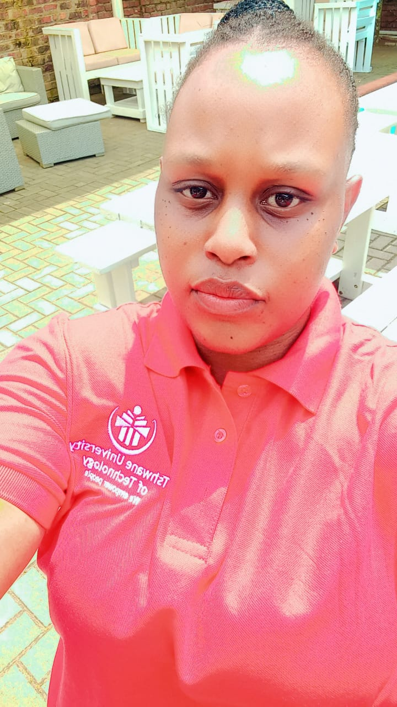

Bathabile Mkhabela
Web Developer / Designer

 117 Kwaggafontein D,
Mpumalanga 0458
117 Kwaggafontein D,
Mpumalanga 0458
(+27) 637-234846
 bathabilezandile945@gmail.com
bathabilezandile945@gmail.com
 bathabilezandile94.wixsite.com/my-site-2
bathabilezandile94.wixsite.com/my-site-2
 https://www.linkedin.com/in/bathabile-mkhabela/
https://www.linkedin.com/in/bathabile-mkhabela/
Profile
As a Junior Web Developer, I bring experse in the JavaScript library React.js, along with proficiency in Java, HTML, CSS, and JavaScript programming. I am skilled in developing and maintaining responsive web applicaons, focused on enhancing user experience and adept at debugging and troubleshoong issues. My technical acumen and problem-solving abilies enable me to deliver high-quality soluo
Work Experience
Web Developer/Designer(July 2024 - January 2025)
ICEP
•Developed We-Mentor, a digital system for managing registers, reports, and providing students easy access to module-specific mentors, including the ability to book mentoring sessions.
Academic Mentor(February 2023 - July 2024)
Tshwane University of Technology
• Provided tailored guidance, support and resources to help students navigate their academic journeys.Provided one-on-one mentoring, academic advice and developing strategies to enhance learning and performance.
Technical Skills
- React
- HTML5
- CSS
- JavaScript
- Java
- MySQL
- C#
- Photoshop
- Adobe After Effets
- Blender
- Unity
Soft Skills
- Effective Communication
- Teamwork
- Problem solving
- adaptbility
- Time management
- Leadership